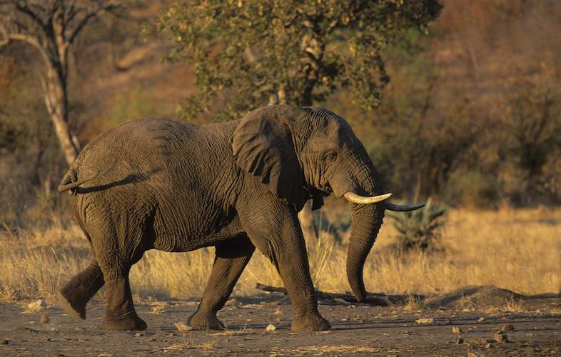

Introducing our gentle giant and beloved ambassador of the savannah,
Nala the Elephant! As
one of the most
cherished residents of our zoo, Nala enchants visitors with her sheer size, intelligence, and heartwarming
personality. Standing tall with her majestic tusks and wrinkled skin, she is an awe-inspiring sight that
captures the imagination of both young and old alike.
Nala's days are filled with fascinating activities that showcase her intelligence and dexterity. From using
her nimble trunk to reach for treats and delicately interact with her caregivers to demonstrating her
impressive memory during enrichment games, she never fails to amaze all who encounter her.
Her social nature shines brightly as she happily interacts with the other members of her herd, engaging in
playful splashes in the water and exchanging affectionate trunk touches. Witnessing Nala's strong family bonds
is a heartwarming experience, reminding us of the importance of kinship and unity in the animal kingdom.
We take great pride in providing Nala with a spacious and enriching habitat that allows her to roam freely and
express her natural behaviors. Our dedicated team of caregivers ensures she receives the best care possible,
promoting her physical and emotional well-being while also participating in important research and
conservation efforts to protect her wild counterparts.
By meeting Nala, visitors not only experience the majesty of one of Earth's largest land mammals but also gain
a deeper understanding of the challenges elephants face in the wild due to habitat loss and poaching. Through
educational programs and interactive exhibits, we aim to inspire a sense of responsibility and commitment to
preserving these incredible creatures and their ecosystems.
Don't miss the opportunity to meet Nala the Elephant and discover the beauty, grace, and intelligence of these
remarkable animals. Her presence at our zoo serves as a powerful reminder of our shared responsibility to
protect and conserve the natural world for future generations.

Back to Top